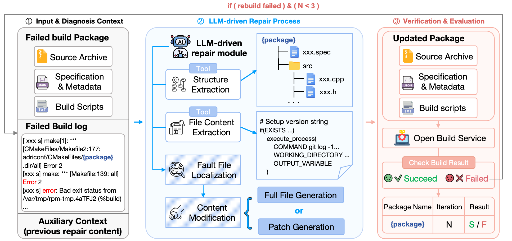

Diagnose
Inspect the failed log, package layout, metadata, and relevant files.
Accepted to the ICSE 2027 Competition Track
Repair real package build failures across instruction set architectures. Diagnose the system, produce a minimal patch, and prove it by rebuilding.
The task
Each case is a package that builds on one architecture and fails on the other. Participants must reason across source archives, package metadata, build scripts, dependency constraints, and long build logs.

Inspect the failed log, package layout, metadata, and relevant files.
Generate a focused unified diff without changing evaluator assets.
Apply the patch and run the official target-architecture validator.
Rank verified repairs with transparent efficiency tie-breakers.
Rules
A repair is successful only when it applies cleanly and the package builds under the official target environment.
Read common questionsThe challenge is open to academic, industry, and open-source teams. LLM-based and agentic repair systems form the primary ranking; non-LLM systems may enter as labeled comparison baselines.
The patch must apply without manual intervention, modify only permitted package files, and complete the configured build validator successfully.
Do not edit evaluator metadata, hard-code hidden answers, delete required tests, replace outputs with dummy artifacts, or otherwise bypass the build.
Teams must disclose models, major prompts, retrieval sources, APIs, and tools used. Organizers may rerun submissions and inspect successful or unusually small patches.
Hidden cases remain organizer-controlled. Network access is disabled during final evaluation unless a declared API mode is explicitly enabled.
Submission
Patch output is the primary public ranking mode. A containerized agent mode is planned after the evaluator and sandbox are stable.
Run your repair system locally and upload one unified diff per case, plus a concise system description. This mode is stable, auditable, and easy to reproduce.
Submit a Docker image exposing a fixed command-line interface. The evaluator mounts a case read-only and collects the generated patch from a dedicated output directory.
Draft archive layout
The final schema will ship with the starter kit. The preview below shows the intended minimum structure for patch-output submissions.
submission/
|-- metadata.json
|-- system-card.md
`-- patches/
|-- <case-id>.diff
`-- ...Evaluation
Textual similarity to a reference patch is not the goal. The evaluator applies the repair to a clean case and uses the build validator as the oracle.
Tie-breakers, in order
Timeline
Competition milestones follow the accepted proposal and the ICSE 2027 Competition Track calendar. Exact participant deadlines will be frozen at launch.
Publish draft rules, evaluator interface, examples, and onboarding guide.
Release public cases, baseline systems, and local validation images.
Teams submit public-split repairs and receive structured build feedback.
Freeze evaluator version and collect systems for organizer-run hidden evaluation.
Eligible teams submit solution reports through the unified Track portal.
Present results, repair strategies, failure analysis, and lessons learned.
FAQ
This preview captures the intended competition policy. Confirmed details will be versioned here as the starter kit and platform are released.
A case includes a manifest, failed build log, package specification, source archives, patches or service files, source and target architecture labels, and the metadata required by the validator.
No. The primary mode accepts patches generated by your system. A containerized-agent mode is planned for teams that want end-to-end system evaluation, subject to sandbox readiness and participant interest.
Yes for patch generation, provided all major models, APIs, tools, and retrieval sources are disclosed. Final container-mode network policy will be published with the sandbox specification.
The official evaluator verifies the input checksum, applies the patch, checks modified paths, runs the target build validator, and emits a structured result with status, duration, patch size, and logs.
No. Hidden cases stay with the organizers until final evaluation. Only aggregate scores and a small set of diagnostic categories will be exposed for the final split.
Public validation will use per-case timeouts and rate limits. The final evaluation will run in a controlled environment with a frozen evaluator, fixed resource limits, and cached dependencies where possible.
The organizers plan to invite eligible teams that submit a valid final entry, comply with integrity rules, and beat the announced non-trivial baseline. Final eligibility follows Track-chair policy.
Resources
Read the paper, inspect the research prototype, and follow the official Track calendar.